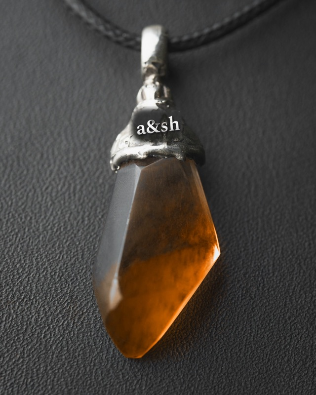
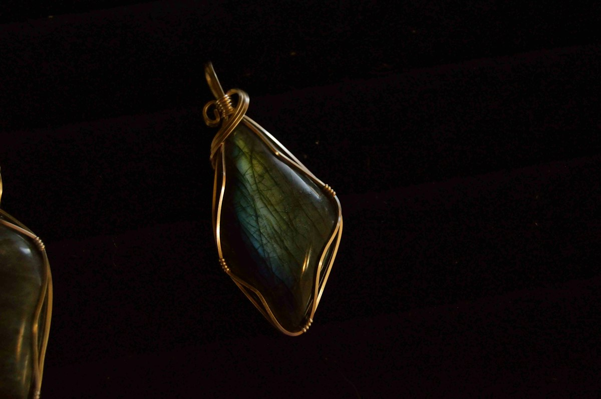
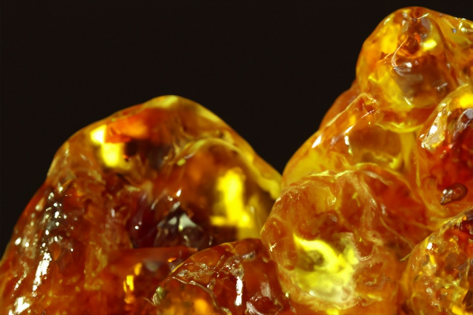

a&shМастерская2026
Янтарь и Пепел
Украшения из настоящего серебра своими руками — без опыта и без печи.
Учим делать украшения из серебряной и медной глины: от комка глины до камня в оправе и зеркальной полировки. Видеоуроки, курсы и клуб мастерской.
Фото-референс. Заменим своей макросъёмкой

a&shМеталл и камень2026
Из глины в серебро
Глина из частиц металла: лепите как пластилин, сушите, обжигаете горелкой — и в руках настоящий металл.
a&shПроекты2026
Украшения
Пять проектов — от шарма с камнем до палочки со сменным наконечником. У каждого чертёж, видеоурок и список материалов.

a&shКамень и металл2026
янтарь
Камень: корунд, лабрадорит, аквамарин, гранат. Момент, сохранённый в форме.
У каждой вещи своя легенда. В мастерской вы делаете украшение сами — от первого комка глины до камня в оправе — и знаете историю каждого шага.
Фото-референсы
a&shМастерская2026
Начать
- ПодпишитесьРолики, бесплатные уроки и анонсы — в сообществе ВКонтакте.
- Заберите гайдЧто купить для первого украшения и сколько это стоит — в Telegram-боте.
- Учитесь в своём темпеКурсы и клуб открываются : оплата на сайте, уроки в личном кабинете.
Telegram YouTube RUTUBE Дзен Pinterest Ярмарка Мастеров TikTok Instagram* Правила розыгрыша Политика обработки данных *Instagram принадлежит компании Meta, признанной экстремистской и запрещённой в России.
Фото-референсы: Unsplash